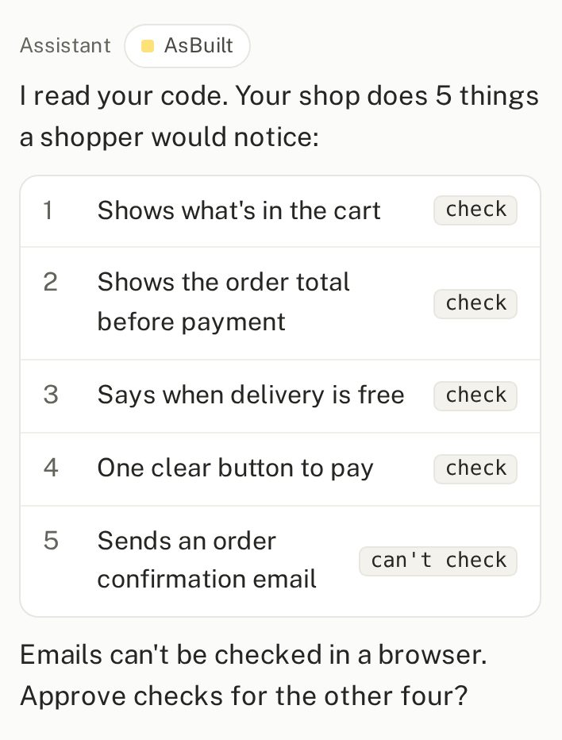
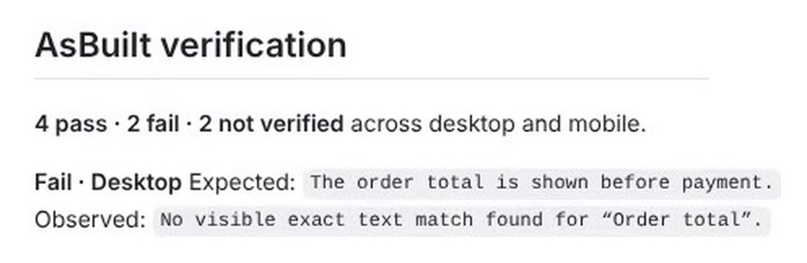
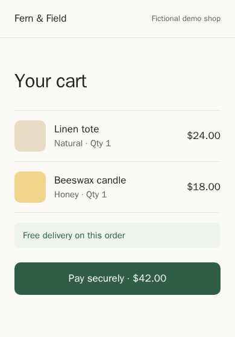
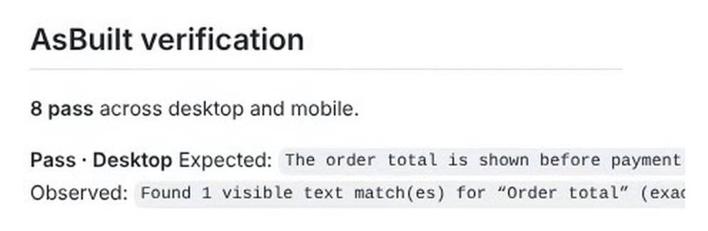

Know what your AI actually built.
Tell your assistant what a feature should do. AsBuilt opens every preview in a real browser, on desktop and mobile, and shows you what works, what doesn't, and what it couldn't check, with a screenshot for every answer.
No servers, no AI bills, no accounts. Works with Claude, ChatGPT and Codex.
AsBuilt verification
- PassChoosing Ontario updates the regionSaw “Sending to Ontario” · desktop and mobile
- PassOntario stays selected on the store pageSaw “Sending to Ontario” after opening Maple Market
- PassA signed-in shopper sees their ordersSigned in with the test account · saw “Your orders”
- FailGift cards are offeredNo “Gift cards available” on the page
See it catch a real bug in 50 seconds.
A real pull request on a fictional shop. A redesign quietly dropped the order total. AsBuilt noticed. See the pull request.

Your assistant reads the code, lists what the shop does, and waits for your approval.

A later redesign is checked on its real preview: the order total is missing.

The mobile screenshot shows it: the total line is gone.

Paste the fix prompt, your assistant fixes it, and the next preview passes all 8.
Play the 50-second video (best with your phone sideways)
What happens in the video (no sound)
- In an AI assistant with the AsBuilt plugin, the user says “Set up AsBuilt on my shop repo.” The assistant lists the five things the shop does, notes that order emails can’t be checked in a browser, and waits for approval of the other four. The chat is recreated for the demo.
- A later pull request simplifies the cart. On its real preview AsBuilt comments: 4 pass, 2 fail, 2 not verified. The order total is missing on desktop and mobile, and the Pay button’s new label is flagged as a wording question, not a failure. The comment also shows coverage: 4 of 5 features have checks.
- The screenshots show the cart without its total line.
- The user pastes AsBuilt’s fix prompt. The assistant restores the total and, since the new Pay button label was intended, updates that check instead of the page.
- The next preview is checked again: all 8 checks pass.
Three questions, answered with evidence.
AI writes the code fast. AsBuilt doesn't take its word that the code works. It checks the running app.
Did I build what I intended?
Each feature's expectations live in your repository, in plain language you approved.
Does it actually work?
A real browser follows each step on desktop and mobile, and takes a screenshot of every check.
Did I break something else?
Every pull request rechecks every earlier feature, so regressions surface before they ship.
How it works
Your assistant does the thinking. AsBuilt does the checking, with fixed rules and no AI, so it can't grade its own homework.
-
Your assistant maps the app
Ask Claude, ChatGPT or Codex with the AsBuilt plugin: “Set up AsBuilt on my repo.” It reads your code, lists every feature it finds in plain words, and drafts checks for the ones that matter most. You just correct and approve.
.asbuilt/features.json -
Push and preview
When your preview deploys, AsBuilt opens it in a real browser and follows your steps: clicks, pages, even signing in with a test account.
Desktop 1440 px · Mobile 390 px -
Read the evidence
One comment on your pull request lists what passed, what failed and why, with screenshots and a fix prompt you can paste back to your assistant.
Updated on every push, never duplicated
Honest about what it knows.
Most tools say pass or fail. AsBuilt also tells you when it couldn't look, and when the answer is yours to decide.
Seen working on desktop and mobile, with a screenshot.
The app did something different from what you said you wanted.
It couldn't check, and it says why: the page needs sign-in, the site was down, the preview is protected.
It noticed something you never specified. Your answer becomes a check.
Set up in about five minutes.
Add one workflow file to your repository. Or ask your assistant to “set up AsBuilt on my repo” and approve the pull request it opens.
- Free on public repositories. Private ones use your GitHub Actions allowance (set a $0 budget to be sure).
- Built for Vercel previews, including protected ones, using Vercel's automation bypass.
- Nothing to install or host. It runs on GitHub's computers.
Full guide: AsBuilt on GitHub
.github/workflows/asbuilt.yml
name: AsBuilt on: deployment_status permissions: contents: read pull-requests: write jobs: verify: if: github.event.deployment_status.state == 'success' runs-on: ubuntu-latest steps: - uses: actions/checkout@v4 - uses: mmeek87/AsBuilt@v1 with: url: ${{ github.event.deployment_status.environment_url }}
Careful by design.
It's your app and your users' trust, so AsBuilt only does what you reviewed.
- Only your preview. It can't be pointed at other sites, and private networks are blocked.
- Nothing risky unless you say so. Cart, checkout and payment steps stay off. On a test site you can approve them, and they run only with Stripe's test card while your test-site banner is showing.
- Test accounts stay secret. They come from GitHub secrets, are typed only into your preview, and passwords are hidden in screenshots.
- Measured, not promised. Zero false passes across 108 checks in 9 test scenarios, including pages designed to mislead it. See the evaluation.
See exactly what you'd get.
A real AsBuilt report from a run against our fictional test shop, with every screenshot.